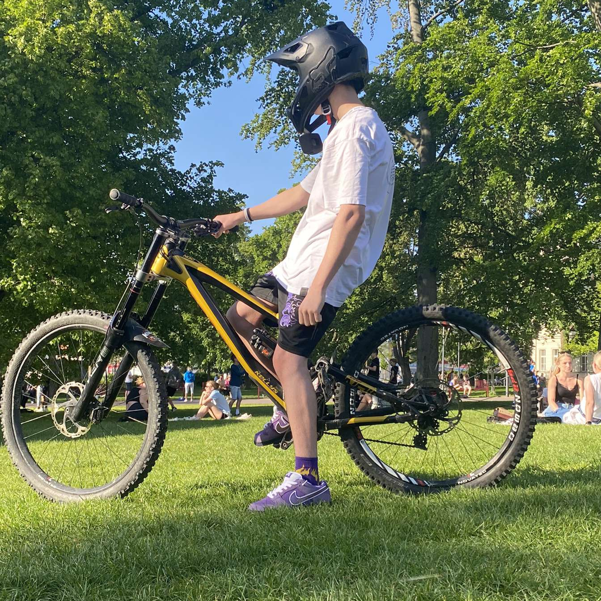
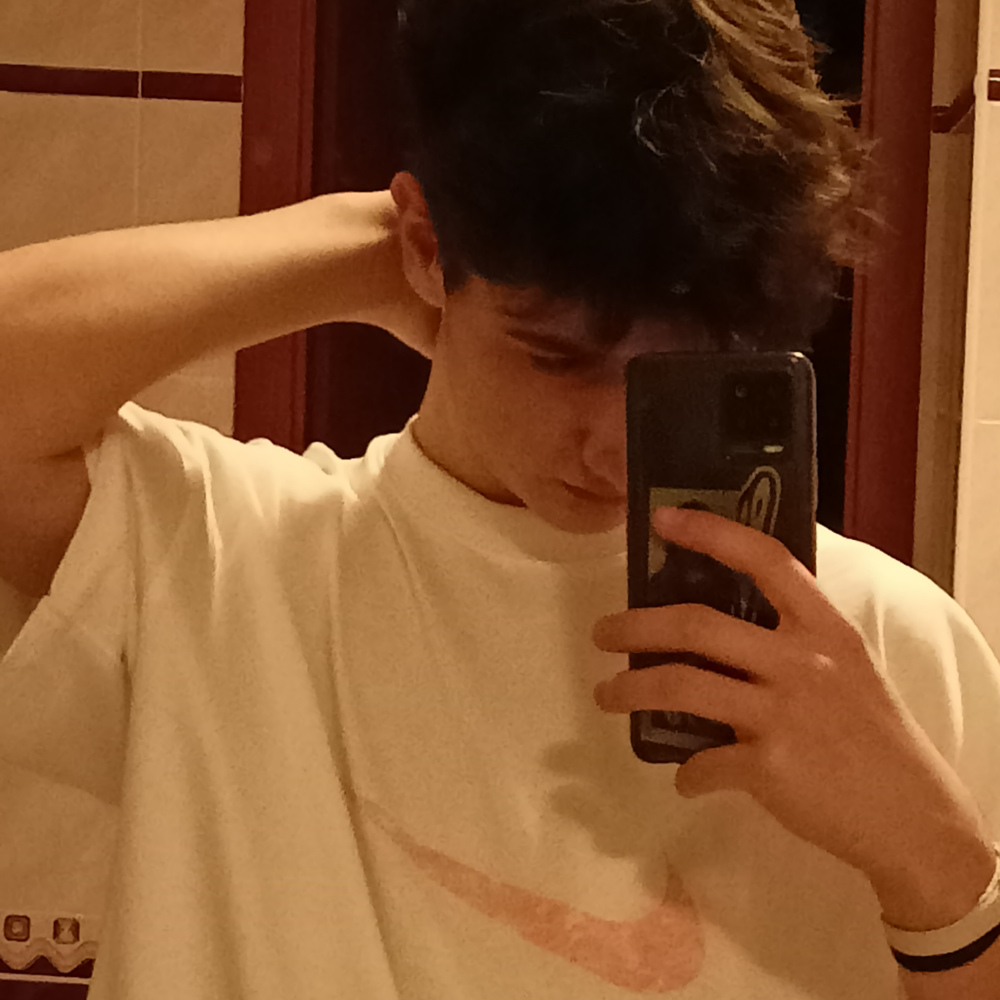
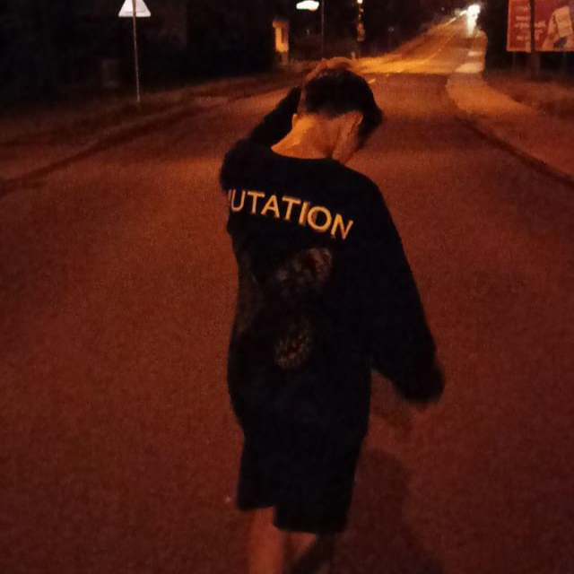
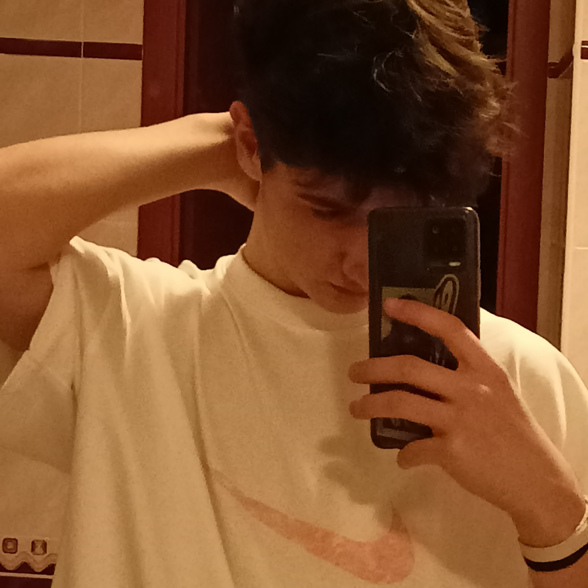
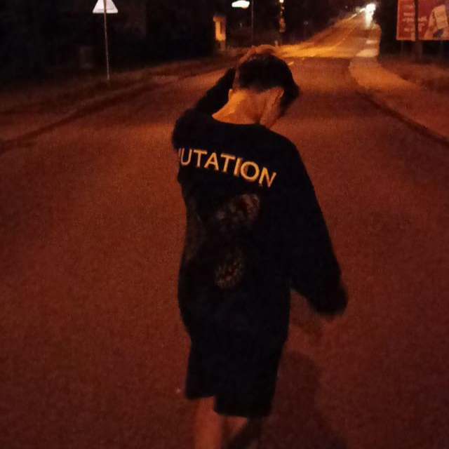
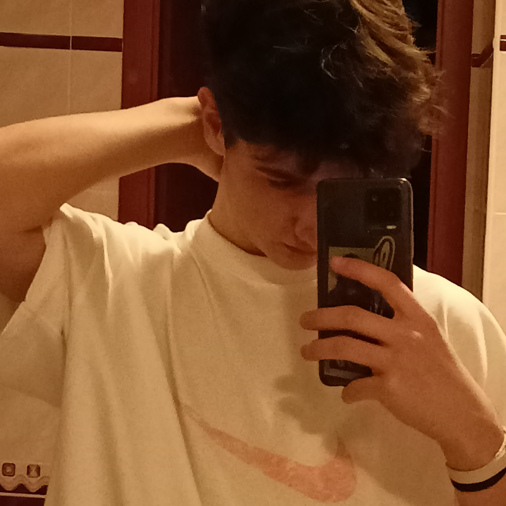
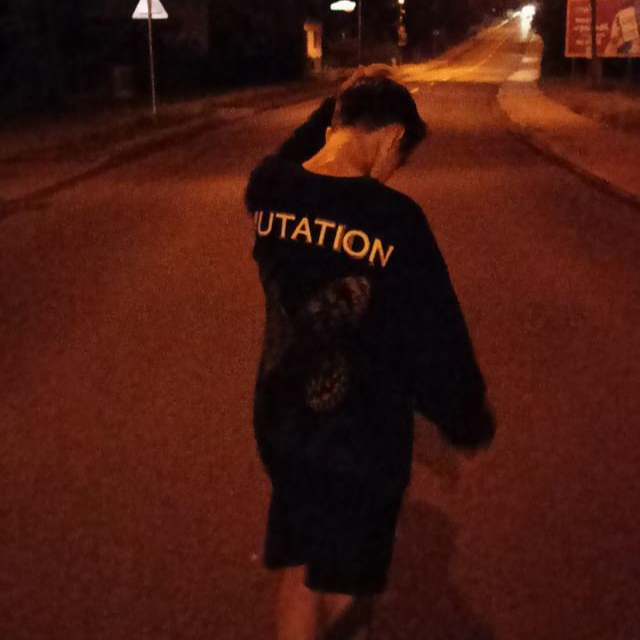
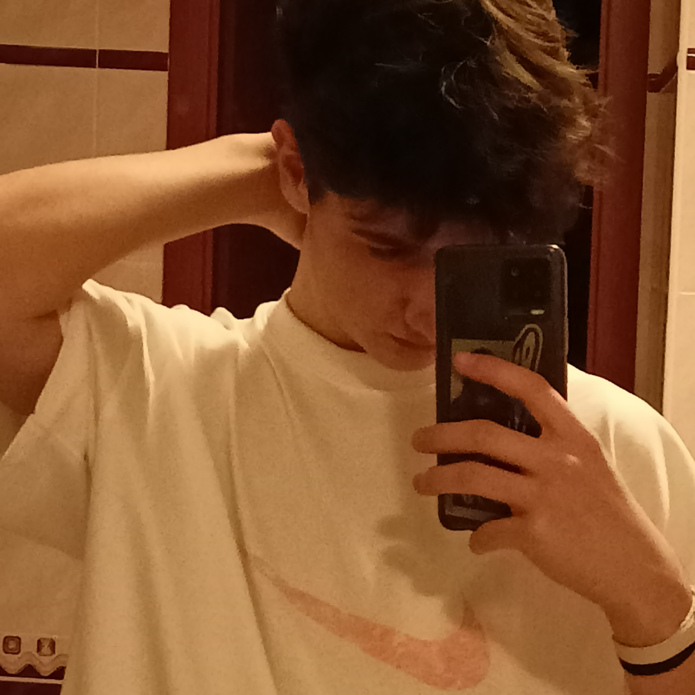
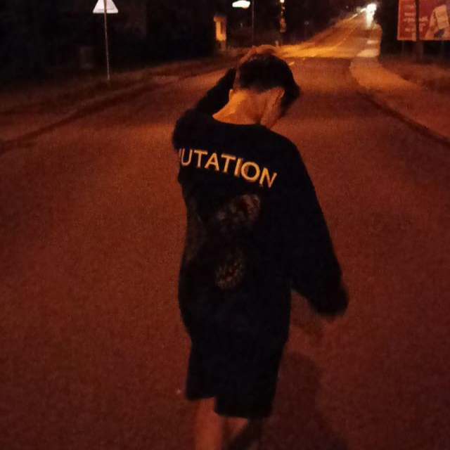

Mé fotografie

 





Na této stránce naleznete veškeré důležité informace o mně.
Mé jméno je Ondřej Vaškovič a je mi 16 let. Jsem student a studuji na střednà škole Baltaci. UÄÃm se programovánà aplikacà a webových stránek, ale také se uÄÃm pracovat s grafikou.
NejvÃce jsem zaměřen na práci s grafikou, grafika je věc která mě na studiu nejvÃce bavà a je to věc kterou mám osobně rád.
Mám mnoho zájmů, mezi ty nejoblÃbenějÅ¡Ã patřà napÅ™Ãklad trávenà volného času s kamarády nebo blÃzkými lidmi, mám rád jÃzdu na horském kole, mám velmi rád auta, rád poslouchám hudbu, celkově rád trávÃm čas venku. Rád se zabÃvám fotografovánÃm aut, také skouÅ¡Ãm tvořit svou vlastnà hudbu. Ve svém volném čase také chodÃm s kamarády do posilovny.
Toto je pár z mých hlavnÃch zájmů, je jich mnohem vÃc ale tohle jsou mé nejoblÃbenějÅ¡Ã.

